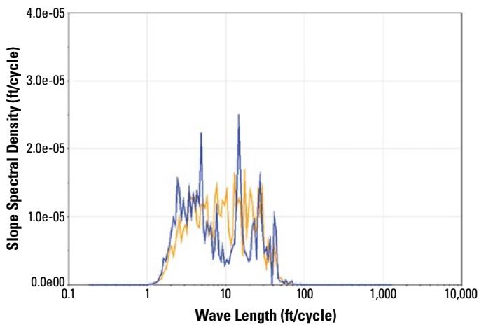
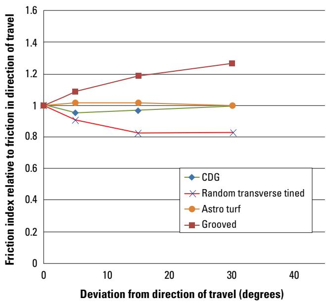

Pavement Evaluation
Pavement evaluation is the systematic assessment of both functional and structural performance characteristics of roadways to determine their existing condition. Functional performance evaluates how the pavement surface interacts with vehicles through metrics such as ride smoothness, skid resistance, texture, and noise generation [1] [2]. Structural performance describes the ability of pavement layers to sustain repeated traffic loads without excessive deformation or energy loss due to viscoelastic damping [1] [2]. The process integrates visual distress surveys with nondestructive testing and laboratory analysis to diagnose deterioration causes and quantify structural capacity [1]. These combined assessments provide the necessary data for making informed decisions regarding maintenance, rehabilitation, and life-cycle cost management [1] [2].
Sources (2)
Key findings
- Found that pavement smoothness is the dominant factor influencing vehicle fuel use and associated greenhouse gas emissions, particularly on high-traffic highways [2].
- Demonstrated that maintaining a low International Roughness Index (IRI) throughout service delivers net environmental benefits that outweigh the additional impacts of smoother construction or maintenance [2].
- Observed that while macrotexture affects fuel efficiency, its influence is secondary to smoothness, with protruding textures increasing consumption more than negative ones [2].
- Evaluated the functional performance of low-volume roads and determined that the environmental case for a very smooth surface disappears, shifting emphasis to durability, aesthetics, or repairability [2].
- Reported that functional performance is judged primarily by surface friction, achieved through abrasion-resistant aggregates that retain microtexture and engineered macrotexture [2].
- Concluded that a comprehensive pavement evaluation must begin with the collection of a broad data set to diagnose deterioration causes and size treatment alternatives [1].
- Established that consistency across agencies is achieved by adopting formal distress-measurement protocols to ensure uniform recording of distress type, severity, and extent [1].
- Identified the falling weight deflectometer (FWD) as the primary nondestructive tool for concrete pavement assessment [1].
Comprehensive Pavement Evaluation Methodology & Performance
Comprehensive pavement evaluation systematically assesses both the functional performance, which governs user safety and comfort through metrics like ride smoothness and friction, and the structural integrity, which determines the capacity to sustain traffic loads without excessive deformation [1] [2]. Functional characteristics are derived from surface interactions involving longitudinal profile roughness and texture components that influence skid resistance and noise generation [2]. Structural assessment relies on nondestructive techniques to measure layer stiffness, thickness, and support conditions, thereby revealing how pavement layers deform under repeated loading [1] [2].
The following figure illustrates how center slab deflection varies along a project when normalized to a standard 9,000 lbf loading.
 Center slab deflection variation along a project normalized to a 9,000 lbf loading. [1]
Center slab deflection variation along a project normalized to a 9,000 lbf loading. [1]
The figure plots the normalized maximum deflection of pavement slabs against the distance along the roadway in feet.
Research problem — Accurately evaluating concrete pavement functional performance, particularly surface smoothness and ride quality, remains challenging due to the industry’s transition to new acceptance standards that require contractors to meet initial targets while minimizing costly corrective actions [2]. Agencies frequently lack the resources or data necessary for comprehensive condition assessments prior to selecting preservation treatments, leading to inadequate diagnoses of deterioration causes and the implementation of ineffective or economically inefficient interventions [1].
The following figure illustrates a typical output from this evaluation process.

ProVAL power spectral density plot showing a repeating wavelength at 15 ft that corresponds to joint spacing. [2]The figure displays a ProVAL roughness report plotting Slope Spectral Density against Wavelength, revealing distinct peaks in the data. A repeating wavelength at 15 ft is identified as corresponding to joint spacing, which serves as a diagnostic metric for evaluating concrete pavement functional performance and surface smoothness.
State of the art — Current evaluation practices prioritize quantifying smoothness, texture, and structural response to assess impacts on vehicle fuel use and emissions [2]. The International Roughness Index (IRI) has largely replaced older profilograph methods as a primary performance indicator for acceptance and network-wide assessments using high-speed inertial profilers [2]. Evaluation frameworks integrate historical record analysis, standardized distress rating via the Pavement Condition Index (PCI), and rigorous structural assessment through falling-weight deflection testing to support holistic preservation decisions [1]. Advanced nondestructive imaging tools such as ground-penetrating radar and ultrasonic tomography are increasingly deployed alongside traditional methods to detect subsurface anomalies without coring [1].
The following figure illustrates how falling-weight deflection data can be utilized to detect subsurface voids.
 Recreated from ©2022 Applied Pavement Technology, Inc., used with permission the figure.11. Void detection plot using FWD data [1]
Recreated from ©2022 Applied Pavement Technology, Inc., used with permission the figure.11. Void detection plot using FWD data [1]
The figure displays a load versus deflection plot generated by dropping a series of loads on both the approach and leave sides of a transverse joint. For each testing location, a line is drawn through the points and extrapolated back toward the origin to help determine if loss of support exists beneath slab corners.
Findings from the reports
- Compiled strip charts of distress severity enabled engineers to pinpoint problem spots, estimate repair quantities, and detect zones with markedly different pavement conditions [1].
- Pavement smoothness emerged as the dominant factor influencing vehicle fuel use and greenhouse gas emissions on high-traffic highways [2].
- Maintaining a low International Roughness Index (IRI) delivered net environmental benefits that outweighed the additional impacts of smoother construction or maintenance [2].
- Macrotexture influenced fuel efficiency, but its impact was secondary to smoothness, with protruding textures increasing consumption more than negative ones [2].
- Concrete’s relative stiffness meant structural responsiveness contributed little extra fuel use, allowing design choices such as CRCP and diamond grinding to preserve long-term smoothness [2].
- Functional performance was judged primarily by surface friction achieved through abrasion-resistant aggregates that retain microtexture and engineered macrotexture [2].
- A comprehensive pavement evaluation required collecting a broad dataset of qualitative and quantitative data to diagnose deterioration causes and size treatment alternatives [1].
- Adopting formal distress-measurement protocols ensured consistency across agencies by recording distress type, severity, and extent uniformly [1].
- The falling weight deflectometer (FWD) remained the primary nondestructive tool for concrete pavement assessment [1].
- Simple windshield surveys often sufficed for roughness appraisal, allowing trained observers to assign reliable roughness categories without costly instrumentation [1].
Novelty & rigor — The methodology is novel for integrating historical design records with mechanistic-empirical modeling to quantitatively assess remaining structural capacity, rather than relying solely on new field tests [1]. It uniquely expands data collection beyond traditional inspections by incorporating real-time remote sensing tools such as LiDAR and satellite imagery to inform targeted field testing plans [1]. The approach is reproducible through a standardized sequence of records review, comprehensive nondestructive testing using specified equipment, and analysis guided by established mechanistic-empirical design frameworks [1] [2].
Reported values
| Parameter | Value | Context | Source |
|---|---|---|---|
| applied force | 3,000 to more than 50,000 lbf | falling weight deflectometer (FWD) testing | [1] |
| delamination depth detection limit | <2 in. | MIRA shallow delamination detection capability | [1] |
| edgedrain failure rate (final) | <2% | current edgedrain failures after decrease | [1] |
| edgedrain failure rate (initial) | 20% | historical edgedrain failures before decrease | [1] |
| edgedrain functionality rate | 30% | in-service edgedrains examined that were fully functional | [1] |
| outfall waterway blockage rate | 29% | waterways preventing flow from the headwall | [1] |
| pavement temperature | 70°F | recommended testing condition (less than) | [1] |
The synthesis of these approaches reveals that effective evaluation integrates visual distress mapping for repair planning with functional metrics like friction and ride quality to guide treatment selection based on traffic volume and environmental considerations. [1] [2]
The figure below illustrates friction measurements taken using a California CT-342 device at various angles relative to the pavement centerline.

Friction index relative to friction in direction of travel for various pavement surface textures at different deviation angles. [1]The figure plots the ratio of friction measured at varying angles relative to a standard longitudinal measurement for four concrete pavement surface textures: CDG, Random transverse tined, Astro turf, and Grooved. The data indicates that the friction index increases as the deviation angle widens for grooved surfaces, whereas it decreases or remains stable for other textures like random transverse tined pavement.
Implications — Designers should prioritize long-term smoothness for high-traffic concrete pavements because the environmental benefits of reduced fuel consumption and emissions justify higher upfront costs for stiff, durable systems [2]. For low-traffic roads, evaluation criteria must shift toward durability, aesthetics, and ease of repair rather than strict smoothness, allowing for thinner slabs or alternative concrete pavers while maintaining minimum safety standards [2]. Evaluation protocols must extend beyond structural capacity to include functional attributes like friction and ride quality, requiring verification of aggregate durability and surface texture rather than treating these as secondary design variables [2]. Assessments should rely on a purpose-driven strategy using essential nondestructive testing tools to pinpoint deterioration causes, supplemented by uniform distress-measurement protocols and systematic surveys to ensure consistency and accurate condition mapping [1].
Limitations — Functional performance assessments often overlook critical attributes like friction and noise by focusing primarily on structural design, smoothness, and joint faulting [2]. Environmental and fuel-saving benefits are highly dependent on traffic volume, with low-volume roads potentially experiencing net losses when broader factors such as runoff and aesthetics are considered [2]. Conclusions regarding the impact of pavement structural responsiveness on vehicle fuel efficiency remain provisional due to a lack of full model validation [2]. Evaluation findings relying on laboratory testing are restricted to projects where such optional testing was actually performed [1]. Repair quantity estimates may become inaccurate if there is a significant delay between initial surveys and construction, necessitating follow-up verification [1]. Interpreting deflection measurements is complicated by multiple influencing variables such as structural stiffness, layer thicknesses, temperature, and moisture [1]. Field sampling locations and quantities on high-speed or heavily trafficked roadways are often restricted due to safety concerns for workers and drivers [1].
Evidence: 2 reports (2 primary)
Related concepts
In this hierarchy
- Parent: Pavement Management
- Sibling: Concrete Production
- Sibling: Design Considerations
- Sibling: Design Methodologies
- Sibling: Pavement Design
- Sibling: Preservation Strategies
Related by shared evidence
- Aggregate Management — shares 2 reports
- Cement Chemistry — shares 2 reports
- Cementitious Materials — shares 2 reports
- Concrete Durability — shares 2 reports
- Concrete Mixture Design — shares 2 reports
- Concrete Production — shares 2 reports
- Concrete Production — shares 2 reports
- Concrete Production — shares 2 reports
Similar topics
- Pavement Management
- Pavement Smoothness
- Pavement Management
- Design Methodologies
- Pavement Assessment
- Material Testing
- Maturity Methods
- Surface Textures
Source coverage
| Source | Comprehensive Pavement Evaluation Methodology & Performance |
|---|---|
| [1] | ✓ |
| [2] | ✓ |
References
- Concrete Pavement Preservation Guide (Third Edition) (2022)
- Integrated Materials and Construction Practices for Concrete Pavement: A STATE-OF-THE-PRACTICE MANUAL (2019)
Feedback on this page